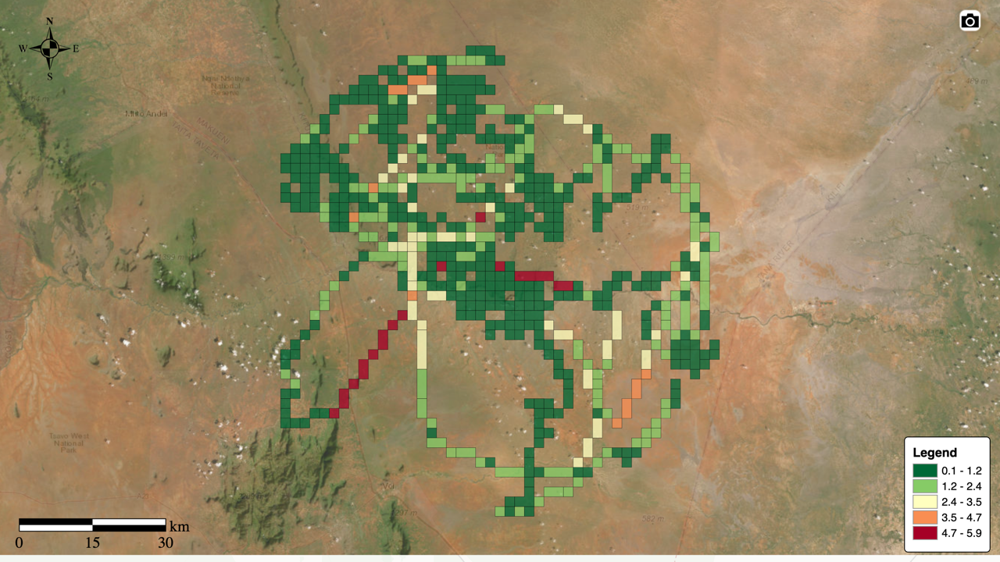

Mean Speed Raster
Turns an EarthRanger subject group's GPS tracks into a grid of mean movement speed, coloured from green (slow) to red (fast) on an interactive map — one view per subject, or one for the whole group.

Guides
User Guide
Loading the workflow, filling in the run form, and reading the map.
Technical Guide
Every step and its settings, how the raster is built, how views and files are wired, and how to recompile and test.
Troubleshooting
Common errors while configuring, running or changing the workflow.
What it does
- Downloads the subject group's cleaned GPS fixes for the chosen time range.
- Cleans them: drops fixes at known bad coordinates, joins the rest into track segments and removes segments outside the length, duration and speed limits.
- Splits the segments into views: one for the whole group (All) or one per subject.
- Builds a grid over each view's tracks — the cell size is the Step Length (2000 m by default) — and gives each cell the mean speed (km/h) of the segments that start in it.
- Sorts the cells by speed, then bins them into five equal-interval classes and colours them green → red, so the legend and colours are in order.
- Maps each view and gathers everything into one dashboard, with each view's grid attached as a GeoParquet download.
Outputs
| Output | What's in it |
|---|---|
| Dashboard | One Map widget. With Group by → Subject Name, a selector switches between subjects; each view has its own map and its own GeoParquet. |
| Ecograph GeoParquet (one per view) | value (mean speed, km/h) and square-cell polygon geometry in the tracks' UTM zone. |
| Map HTML (one per view) | The interactive map shown on the dashboard. |
| Relocations GeoParquet | All cleaned fixes for the group. |
| Trajectories GeoParquet | All filtered segments for the group, with subject_name, distance, duration and speed. |
Requirements
- Access to an EarthRanger data source, set up as a connection.
Get started
New to the workflow? Start with the User Guide. Running into an error? Check Troubleshooting first.